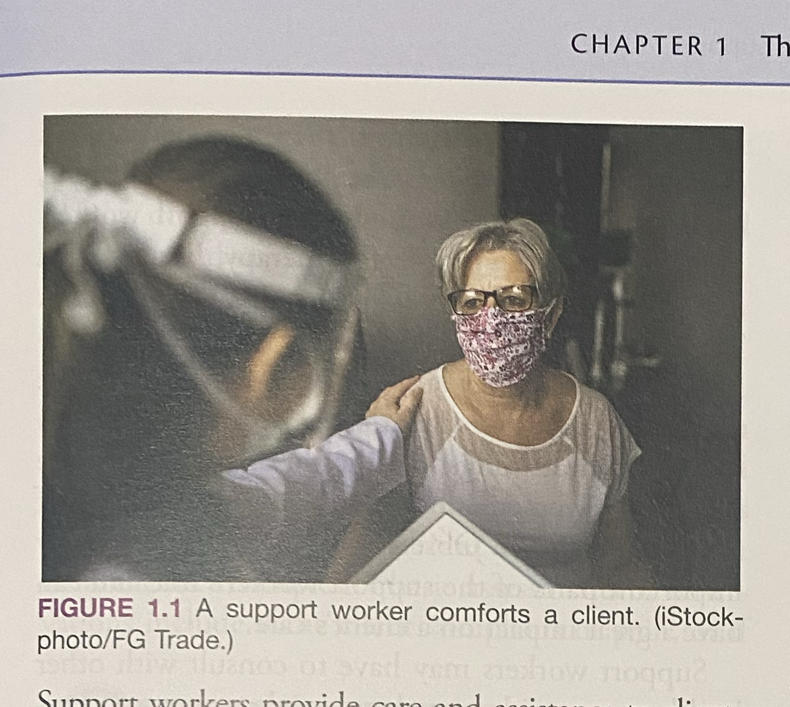
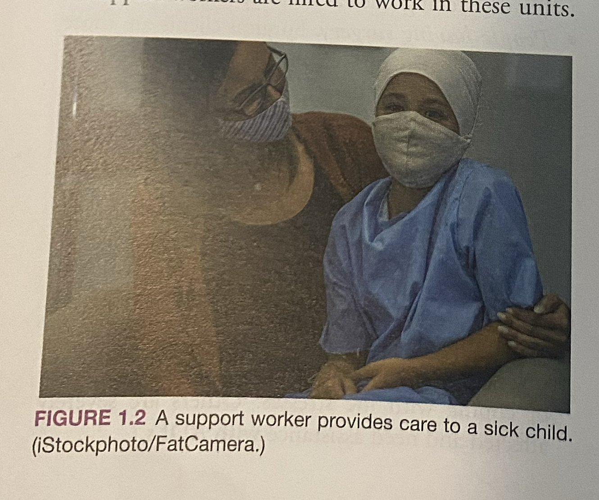

《加拿大支持工作者教材》（第5版）全书无删减中英双语对照精研版
Sorrentino's Canadian Textbook for the Support Worker (5th Edition)
Chapter 1: The Role and Responsibilities of the Support Worker
第 1 章：支持工作者的角色与职责（原版逐字逐句 19 页全文典藏版）
【开篇导读与学习目标】Chapter 1 Opener & Learning Objectives (Page 1)
学习目标 (Objectives)
EN 原文After reading this chapter, the learner should be able to do the following: 1. Identify the role support workers play within the health care team. 2. Describe the goal of support work. 3. Differentiate between activities of daily living (ADLs) and instrumental activities of daily living (IADLs). 4. Describe the main responsibilities of the support worker. 5. Describe the importance of understanding the roles and responsibilities of support work. 6. Distinguish between regulated and unregulated health care providers. 7. Describe the significance of having a professional approach to support work. 8. Identify the things to consider when thinking critically and solving problems. 9. List the principles of client-centred care.
CN 译文完成本章研读后，学习者应当能够达成以下核心专业能力考核目标： 1. 明确支持工作者在整个跨学科医疗卫生照护团队中所扮演的角色。 2. 阐述支持工作的根本执业宗旨与终极目标。 3. 准确区分“基础日常生活活动”（ADLs）与“工具性日常生活活动”（IADLs）。 4. 详尽阐述支持工作者的六大核心工作职责范畴。 5. 阐明深刻理解支持工作角色范畴与法定责任对执业安全的重要意义。 6. 明晰受监管专业医护人员与未受监管健康照护人员的法律界限。 7. 阐明在日常支持工作中秉持专业素养与严谨态度的重要价值。 8. 掌握在进行临床批判性思维与解决实际照护难题时必须考量的四大核心要素。 9. 准确列举“以服务对象为中心”的 DIPPS 核心人本照护原则。
核心专业术语表 (Key Terms) (Page 1)
| 英文核心术语 (Key Term) | 音标 (Phonetic) | 权威中文译名 | 原版学术定义与临床内涵 (Definition & Clinical Context) |
|---|---|---|---|
| Activities of daily living (ADLs) | /ækˈtɪvətiz əv ˈdeɪli ˈlɪvɪŋ/ | 基础日常生活活动 | 每个人每天为了自立生存所必须执行的自我照护活动，包括进食、沐浴、穿衣、梳理修饰、如厕排泄及床上或轮椅转移移动。 |
| Instrumental activities of daily living (IADLs) | /ˌɪnstrəˈmɛntl .../ | 工具性日常生活活动 | 维持在家庭或社区环境中独立自主生活所需的复杂高阶技能，包括使用电话、购物、餐食准备烹饪、家务清洁、洗衣、财务管理以及按医嘱服药。 |
| Client | /ˈklaɪənt/ | 服务对象 / 案主 | 在社区、机构或医院等任何照护场景中接受支持照护服务的个体的通用尊称（涵盖医院患者、院舍长者与居家案主）。 |
| Compassionate care | /kəmˈpæʃənɪt kɛər/ | 慈爱关怀 / 恤幼怜老照护 | 在关怀服务对象时体现出的仁慈、真诚同理、敏锐直觉、温情与深刻理解，亦称“以服务对象为中心的照护（Client-Centred Care）”。 |
| Confidentiality | /ˌkɒnfɪˌdɛnʃiˈæləti/ | 信息保密性 / 隐私保密原则 | 尊重、保护并捍卫服务对象一切个人身体、健康与私密信息的法律与伦理义务；该信息仅能在直接参与照护的团队成员间依法共享。 |
| Dignity | /ˈdɪɡnəti/ | 人格尊严 | 个体感到自身有价值、受尊重与受重视的心灵状态；支持工作绝不能有贬低或幼儿化（Infantilizing）长者的行为。 |
| Discretion | /dɪˈskrɛʃən/ | 审慎明辨 / 言行克制 | 在说话内容、表达方式、说话时机与场合上所表现出的良好职业判断力；懂得何时信息该保密、何时该向上汇报。 |
| Empathy | /ˈɛmpəθi/ | 同理心 / 共情能力 | 能够站在他人的处境中，深刻体察并理解其内心情感、痛苦与视角的心理能力，而非居高临下的同情（Sympathy）。 |
| Holistic care | /hoʊˈlɪstɪk kɛər/ | 全人照护 | 将服务对象视为一个不可分割的整体，全面满足其身体生理、心理情绪、社交人际、认知智力、文化传统与精神灵性六大维度的多维需求。 |
| Independence | /ˌɪndɪˈpɛndəns/ | 独立自立 | 不依赖他人、能够自己为自己做决定的自主状态；支持工作必须全力激发并鼓励案主的残存自理功能。 |
| Multidisciplinary team | /ˌmʌltiˈdɪsəplɪnɛri tiːm/ | 跨学科医疗照护团队 | 由具有不同专业背景、技能与执业范围的医护专业人员（医生、护士、治疗师、PSW 等）组成的协作团队，共同朝着改善案主健康的统一目标工作。 |
| Professionalism | /prəˈfɛʃənəlɪzəm/ | 专业素养 / 职业化精神 | 一种在工作中展现对他人尊重、高度敬业承诺、精湛操作胜任力以及端庄合宜言行举止的工作方式与态度。 |
| Scope of practice | /skoʊp əv ˈpræktɪs/ | 法定执业范围 | 由省级法律法规、雇主管理政策及正规院校教学大纲共同界定的、该工种被法律允许执行与严禁执行的职责与操作界限。 |
| Supervising nurse | /ˈsuːpərvaɪzɪŋ nɜːrs/ | 督导护士 / 责任主管护士 | 负责督导、指导、评估并向支持工作者委派日常照护任务的注册护士（RN）或注册实用护士（RPN/LPN）。 |
| Unregulated care provider (UCP) | /ʌnˈrɛɡjʊleɪtɪd kɛər prəˈvaɪdər/ | 未受监管照护提供者 | 执业行为不由省法定专业行业公会（College）直接发牌监管、但在医疗团队中提供关键生活照料的从业人员（如 PSW、HCA）。 |
第一节：支持工作的本质与崇高宗旨 (Pages 2 - 3)
支持工作者的定义与服务对象 (What is a Support Worker & Client?)
EN 原文Support workers provide care and assistance to clients of any age who have defined health care needs and who require help with their daily activities, whether they live in a facility or in the community. Client is a general term for any person receiving care or support services in a community setting, such as hospital patients, facility residents, and clients in the community.
CN 译文无论身处专业医疗机构还是社区私人居所，支持工作者致力于为全年龄段、存在明确健康照护需求且在日常生活中需要协助的服务对象提供专业关怀与生活支持。“服务对象（Client）”是一个宽泛而充满尊重的通用称谓，涵盖了在不同医疗场景中接受照护的各类人士，包括医院中的就医患者（Patients）、长期照护院舍中的常住长者（Residents）以及社区居家环境中的案主（Community Clients）。
支持工作的终极目标 (The Ultimate Goal of Support Work)
EN 原文The ultimate goal of support work is to improve the quality of life of the client and family by offering client-centred care and support in a safe, kind, sensitive, caring, and understanding manner. Support workers can make a difference in people's lives by alleviating loneliness, providing empathy, ensuring comfort, encouraging independence, and promoting the client's self-respect (FIGURE 1.1). They support the client and family in a holistic manner by addressing the client's physical, psychological, social, cognitive, cultural, and spiritual needs and advocate for the client by speaking or acting on the client's behalf.
CN 译文支持工作的终极宗旨，在于以安全、仁善、敏锐、慈爱与深刻理解的态度，提供“以服务对象为中心（Client-Centred Care）”的照护与支持，从而全方位提升服务对象及其整个家庭的生活质量。支持工作者通过驱散孤寂、付出同理共情、保障身体舒适、鼓励自主自立以及捍卫人格尊严，真真切切地改变着无数脆弱个体的生命轨迹（参见图 1.1）。他们以全人关怀（Holistic Care）的哲学为导向，全面顾及服务对象在身体生理（Physical）、心理情绪（Psychological）、社交关系（Social）、认知能力（Cognitive）、文化传统（Cultural）以及精神灵性（Spiritual）等六大维度的多维需求，并在关键时刻替服务对象发声代言，维护其合法权益。

FIGURE 1.1: A support worker comforts a client.
【教学要点】支持工作者不仅提供生理维度的协助，更通过倾听、目光接触与温暖肢体语言传递温情与同理心，维护服务对象的自尊自重（Self-Respect）。
团队协作与执业灵活性 (Teamwork and Adaptation)
EN 原文Support workers may work as part of a health care team or work individually with a client. Legislation, employer policies, and a client's condition all influence how support workers function and how much supervision they need. They may collaborate with health care providers or with professionals outside of the health care sector, depending on the needs of their clients. Support workers must use discretion at all times and honour the client's right to confidentiality whenever discussing the client's case with co-workers. Support workers are expected to adapt their work style to the setting and to the needs and wishes of the client receiving care.
CN 译文在日常工作中，支持工作者既可以作为跨学科医疗团队的一员协同作战，也可以一对一直接服务特定家庭。各省法律法规、雇主管理规章以及服务对象当前的身心健康状况，共同决定着支持工作者的执业方式以及所需的临床督导程度。他们不仅需要与各级医护同事紧密协作，还经常需要根据个案需求与医疗卫生体系之外的社会工作者、教师、神职人员或法律代表沟通对接。支持工作者在任何时刻都必须保持严谨审慎，在与同事探讨个案时严格恪守保密义务。同时，他们必须具备高度的灵活性，主动调整自身的工作风格以契合所处环境及服务对象的个人偏好与意愿。
第二节：支持工作在加拿大全境的职业现状与场所 (Pages 3 - 4)
加拿大各省职业称谓与现状差异 (Support Work Across Canada)
EN 原文The nature of support work varies across the country. There are differences in educational programs, work settings, job responsibilities, and terms used to describe support workers. Some sections of this text may not apply to support work in your particular city, province, or territory. If you are unsure about which parts apply to your area, ask your instructor or employer.
The term support worker refers to the worker who provides personal care and support services. However, assisted-living worker, personal support worker (PSW), personal attendant, patient care assistant (PCA), resident care aide (RCA), health care aide (HCA), home care attendant, home support worker, nursing aide, community health worker, or continuing care assistant (CCA)—among other titles—may be used in your province or territory to describe similar (but not always equivalent) jobs. The Appendix at the end of this book lists the support worker's titles in each province and territory.
Because of the wide variety of titles, the general public may not be aware of what support workers are called in their own province or territory or even within a facility they use. It is the role of support workers, their employing agencies, other health care providers, and their province's or territory's Ministry of Health to inform others of their role and how it fits in their current health care system.
This list may also include several titles that are not equivalent to one another. For example, in Ontario, developmental service workers (DSWs) play a different role and follow different educational standards than personal support workers (PSWs), and yet both are considered to be support workers within the health care team. In some parts of Canada, the term personal attendant refers to a worker who is supervised directly by the person for whom they provide support services; personal attendants support people with physical disabilities. Educational programs to become a personal attendant are generally shorter than those for support workers.
The term support worker refers to the worker who provides personal care and support services. However, assisted-living worker, personal support worker (PSW), personal attendant, patient care assistant (PCA), resident care aide (RCA), health care aide (HCA), home care attendant, home support worker, nursing aide, community health worker, or continuing care assistant (CCA)—among other titles—may be used in your province or territory to describe similar (but not always equivalent) jobs. The Appendix at the end of this book lists the support worker's titles in each province and territory.
Because of the wide variety of titles, the general public may not be aware of what support workers are called in their own province or territory or even within a facility they use. It is the role of support workers, their employing agencies, other health care providers, and their province's or territory's Ministry of Health to inform others of their role and how it fits in their current health care system.
This list may also include several titles that are not equivalent to one another. For example, in Ontario, developmental service workers (DSWs) play a different role and follow different educational standards than personal support workers (PSWs), and yet both are considered to be support workers within the health care team. In some parts of Canada, the term personal attendant refers to a worker who is supervised directly by the person for whom they provide support services; personal attendants support people with physical disabilities. Educational programs to become a personal attendant are generally shorter than those for support workers.
CN 译文在加拿大广袤的国土上，支持工作的具体实践模式因地域而异。各省在职业培训课程设置、照护工作环境、法定岗位职责以及职业头衔称谓上均存在一定差异。本书中的某些具体细则可能不完全适用于您所在的特定省份、地区或城市。如果您对某些地方性规程存有疑问，请务必咨询您的授课导师或受雇机构主管。
广义的“支持工作者（Support Worker）”泛指所有提供个人生活照料与支持服务的专业从业人员。然而，在加拿大不同省份与地区，该岗位拥有诸多相似（但不完全对等）的法定或行业头衔： - 安大略省（Ontario）通称：个人支持工作者（Personal Support Worker, PSW）； - 卑诗省（BC 省）通称：健康照护助理（Health Care Assistant, HCA） 或 驻院长者照护员（Resident Care Aide, RCA）； - 阿尔伯塔省（Alberta）通称：健康照护助理（Health Care Aide, HCA）； - 萨斯喀彻温省与新斯科舍省通称：持续照护助理（Continuing Care Assistant, CCA）； - 曼尼托巴省常用：健康照护助理（HCA） 或 家庭照护员（Home Care Attendant）； - 医院临床急性病房常称：病患照护助理（Patient Care Assistant, PCA） 或 护理员（Nursing Aide）。
正因为头衔百花齐放，公众往往难以辨别其身处的机构或省份对该岗位的确切称呼。支持工作者本人、受雇机构、医护同仁以及各省卫生厅均负有向社会公众普及宣教该职业职能定位的责任。需要特别强调的是，某些看似相近的称谓其实具有不同的法定准入条件：例如在安大略省，“发育障碍服务工作者（Developmental Service Worker, DSW）”与 PSW 遵循完全不同的教学大纲，但二者同属于医疗团队中的支持序列；而在某些省份，“私人护理员（Personal Attendant）”直接受雇并受督导于肢体残疾的案主本人，其培训学时通常短于正规支持工作者。
广义的“支持工作者（Support Worker）”泛指所有提供个人生活照料与支持服务的专业从业人员。然而，在加拿大不同省份与地区，该岗位拥有诸多相似（但不完全对等）的法定或行业头衔： - 安大略省（Ontario）通称：个人支持工作者（Personal Support Worker, PSW）； - 卑诗省（BC 省）通称：健康照护助理（Health Care Assistant, HCA） 或 驻院长者照护员（Resident Care Aide, RCA）； - 阿尔伯塔省（Alberta）通称：健康照护助理（Health Care Aide, HCA）； - 萨斯喀彻温省与新斯科舍省通称：持续照护助理（Continuing Care Assistant, CCA）； - 曼尼托巴省常用：健康照护助理（HCA） 或 家庭照护员（Home Care Attendant）； - 医院临床急性病房常称：病患照护助理（Patient Care Assistant, PCA） 或 护理员（Nursing Aide）。
正因为头衔百花齐放，公众往往难以辨别其身处的机构或省份对该岗位的确切称呼。支持工作者本人、受雇机构、医护同仁以及各省卫生厅均负有向社会公众普及宣教该职业职能定位的责任。需要特别强调的是，某些看似相近的称谓其实具有不同的法定准入条件：例如在安大略省，“发育障碍服务工作者（Developmental Service Worker, DSW）”与 PSW 遵循完全不同的教学大纲，但二者同属于医疗团队中的支持序列；而在某些省份，“私人护理员（Personal Attendant）”直接受雇并受督导于肢体残疾的案主本人，其培训学时通常短于正规支持工作者。
多元化工作场所 (Workplace Settings)
EN 原文Support workers work in a variety of settings (see Chapter 3 for definitions and details of workplace settings). In all settings, support workers ensure the safety of their clients, including those who are living with cognitive or mental health challenges. Services provided by support workers to clients in their homes can enable some clients to live independently or with their families. Support workers may also assist clients with social support, or social reintegration, as they prepare to move into an assisted-living facility or group home. In long-term care facilities, support workers assist clients with complex health challenges. Support workers also provide comfort and end-of-life care to dying clients so that they can die with dignity.
CN 译文支持工作者的执业舞台极其广阔（详见第 3 章工作场所详解）。无论在何种环境中，支持工作者都必须时刻筑牢服务对象的安全防线，特别是针对那些患有认知障碍（阿尔茨海默病等失智症）或心理精神健康挑战的脆弱人群。 1. 居家与社区环境（Home & Community Care）：支持工作者入户提供生活协助，使许多原本不得不提早入住养老院的高龄或残疾长者得以继续在熟悉的家中自立生活，享受天伦之乐。 2. 辅助生活院舍与集体居所（Assisted-Living & Group Homes）：协助服务对象进行社交融入与适应过渡。 3. 长期照护院舍（Long-Term Care Facilities / Nursing Homes）：日夜守护病情复杂、多病共存且生活无法自理的重症脆弱长者。 4. 姑息缓和医疗与安宁疗护中心（Palliative Care & Hospices）：为处于生命终末期的临终患者提供全方位的身体舒适照护、口腔湿润、体位摆放与心灵陪伴，护佑他们安详、无痛、保有尊严地走完人生最后一程。
第三节：支持工作者的六大核心工作职责 (Pages 4 - 5)
EN 原文The role and responsibilities of support workers are determined by their province or territory and the employers they work for. In general, support workers assist clients with their personal care and personal hygiene, ensure safety, and promote independence. The six main areas of responsibility for support workers include: 1. Personal care 2. Support for nurses and other health care providers 3. Family support 4. Social support 5. Housekeeping or home management 6. Documenting and reporting
CN 译文支持工作者的具体角色定位与岗位职责，受所在省份法律大纲及受雇机构规章制度严格管辖。概括而言，其核心工作聚焦于协助服务对象完成个人生活照料与个人卫生维护、消除环境危险保障人身安全、以及全方位促进和激发个体的自理功能。其日常核心执业范畴涵盖以下六大支柱：
1. 个人生活照料 (Personal Care)
EN 原文Assisting with personal care and hygiene is a major part of the support worker's role. Personal care includes activities of daily living (ADLs)—the self-care activities that people perform on a daily basis to remain independent and to function in society. ADLs include eating, bathing, grooming, dressing, and toileting. Support workers also assist clients with mobility, including walking, moving in bed, and transferring between a bed and a chair or wheelchair.
CN 译文协助个人卫生与生活照料是支持工作最核心、耗时最多的基石职责。这主要涵盖“基础日常生活活动”（ADLs）——即个体为了在社会中自立生存每天必须完成的生理自理行为。具体包括：协助进食与喂饭、床上擦浴或淋浴、洗头更衣、修剪指甲、剃须口腔护理、以及如厕排泄护理。此外，支持工作者还负责协助活动与转移，包括搀扶行走、床上轴线翻身、以及在病床与轮椅/座椅之间进行安全转移操作。
2. 协助护士与其他医护人员 (Support for Nurses and Other Health Care Providers)
EN 原文Support workers assist nurses and other health care providers with clinical procedures and tasks. They observe clients and report any changes in physical, emotional, or cognitive status to the supervising nurse. In some facilities, support workers measure vital signs, collect specimens, and assist with simple wound care or range-of-motion exercises under the supervision or delegation of a nurse.
CN 译文支持工作者是主管护士在病床旁最重要的“眼睛和耳朵”。他们协助护士及其他专职治疗师开展临床护理程序。最重要的是时刻保持高度警觉，敏锐观察服务对象在身体生理（如皮肤发红破损、呼吸急促、尿量骤减）、心理情绪（如抑郁寡欢、突发激越谵妄）或认知状态上的任何细微变化，并第一时间向责任护士做出口头与书面汇报。在特定机构中，支持工作者还在护士的指导或授权委派下测量体温血压脉搏呼吸等生命体征、采集尿便标本、协助简单伤口敷料更换或协助关节活动度训练。
3. 家庭系统支持与暂托照料 (Family Support)
EN 原文Support workers assist families by helping them care for their loved ones and by providing respite care. Respite care is temporary relief or a break from caregiving for family members who are caring for a loved one with chronic illness, disability, or dementia. It allows family caregivers time to rest, run errands, and attend to their own physical and emotional health.
CN 译文许多慢性病、重度残障或认知症长者由家人在居家长年照护，家庭照料者往往处于身心极度耗竭的崩溃边缘。支持工作者入户协助不仅分担了繁重的翻身洗浴体力劳动，更提供了极其宝贵的“喘息照护（Respite Care）”——使筋疲力尽的配偶或儿女能够抽身休息数小时、出门就医购物或睡个好觉，从而维系整个家庭生态系统的稳定。
4. 社交支持与人际交往 (Social Support)
EN 原文Support workers provide social support to help alleviate loneliness and isolation. They engage clients in conversations, listen actively to their life stories, and assist them with social activities, outings, or hobbies. In community settings, they may help clients reintegrate into social networks and community programs.
CN 译文许多孤寡高龄长者最痛苦的折磨并非身体疾病，而是深刻的孤独感。支持工作者通过真诚的倾听、陪同散步交谈、鼓励参与手工棋牌等文娱社交活动，重新点燃服务对象对生活的热爱，帮助其摆脱与世隔绝的心理孤岛，重建社区社交纽带。
5. 家务管理与家居环境维系 (Housekeeping or Home Management)
EN 原文In home care, support workers often assist with instrumental activities of daily living (IADLs). IADLs are complex skills needed to live independently in the community, such as light housekeeping, laundry, shopping, meal planning and preparation, and handling personal banking. Maintaining a clean and hazard-free environment prevents infections and injuries.
CN 译文特别是在社区入户照护（Home Care）中，支持工作者负责协助完成高阶的“工具性日常生活活动”（IADLs）。这包括采购生活日用品、科学规划营养餐单并进行烹饪料理、轻度居室保洁吸尘、衣物清洗烘干、更换床品、以及协助管理账单等。整洁卫生的居住环境是切断病原体传播链、防止跌倒滑倒等意外伤害的关键保障。
6. 基础评估、观察记录与书面汇报 (Documenting and Reporting)
EN 原文Support workers are legally and ethically required to document all care provided and report any significant changes in a client's condition. Written or electronic documentation provides an ongoing record of the client's progress and ensures continuity of care among team members.
CN 译文在法律与临床层面上，“没有记录就等于没有做过（If it was not documented, it was not done）”。支持工作者必须依法依规对每一次翻身、排泄、进食量、精神状态以及所采取的照护措施进行客观、真实、及时的书面或电子病历（EHR）记录，并运用标准结构化沟通模式（如 SBAR 汇报法）向主管护士进行关键交班。
第四节：支持工作者真实一日工作实录 (Pages 5 - 9)
A Day in the Life of a Support Worker (Three Comprehensive Clinical Scenarios)
为帮助学员建立对支持工作者在不同工作场所真实运作的立体认知，教材精选呈现了三位从业人员完整的执业一日实录：
场景 1：社区入户照护 —— 史蒂芬的一天 (In the Community: Stephen) (Pages 5 - 6)
EN 原文Stephen is a home support worker employed by a community agency. Each evening, he receives his daily assignment for the next day from his supervisor. He plans his route using a map and prepares supplies. His assigned clients live with various physical, cognitive, and social challenges: - 0730 to 0930 (7:30 a.m. to 9:30 a.m.): Ms. Lau (Age 32) Ms. Lau has cerebral palsy and uses an electric wheelchair. She lives alone and works part-time outside the home two days a week. Stephen assists her with morning care, transfers her from bed to wheelchair using proper body mechanics, helps her dress in professional attire, prepares her breakfast, and ensures she is safely prepared for accessible transit to her workplace. - 1000 to 1215 (10:00 a.m. to 12:15 p.m.): Mr. O'Connor (Age 59) Mr. O'Connor is recovering at home from a stroke (cerebrovascular accident). He has hemiplegia (paralysis on one side of his body) and expressive aphasia (difficulty speaking). His wife, age 51, is his primary caregiver and works part-time from home. Stephen assists Mr. O'Connor with a tub bath, performs prescribed passive range-of-motion exercises, and assists him with walking using a quad-cane. Stephen prepares lunch and provides Mrs. O'Connor with respite time to rest and run errands. - 1230 to 1530 (12:30 p.m. to 3:30 p.m.): Mr. Horowitz (Age 71) Mr. Horowitz is living with Alzheimer's disease (dementia) and has a tendency to wander. His wife, 67, is exhausted from 24-hour caregiving. Stephen engages Mr. Horowitz in reminiscing, looks through photo albums with him, and accompanies him on a safe outdoor walk in the garden. This respite care provides Mrs. Horowitz with essential time to attend a medical appointment and rest. - 1530 to 1600 (3:30 p.m. to 4:00 p.m.): End of Shift Reporting Stephen completes detailed progress notes for each client, records observations, and calls his agency nursing supervisor to report that Mr. O'Connor showed slight redness over his sacrum that did not blanch, recommending skin assessment by the visiting RN.
CN 译文史蒂芬受雇于一家社区照护机构，担任居家支持工作者。每天傍晚，他会收到主管护士发送的次日派单计划，并规划最佳行车路线： - 07:30 - 09:30：刘女士（32岁，脑性瘫痪） 刘女士因脑瘫导致双下肢瘫痪，需使用电动轮椅。她独居且每周有两天外出兼职工作。史蒂芬准时入户，协助她完成晨间洗漱与会阴清洁，运用规范人体力学将其安全转移至轮椅上，协助穿戴得体的职业正装，制作营养早餐，并护送其安全搭乘无障碍通勤巴士。 - 10:00 - 12:15：奥康纳先生（59岁，脑卒中偏瘫恢复期） 奥康纳先生因中风导致右侧肢体瘫痪并伴有表达性失语。其妻子常年独力照料，身心俱疲。史蒂芬使用移位防滑设备协助先生进行安全的盆浴清洁，严格遵照物理治疗师制定的方案协助其进行关节被动活动度训练与四脚拐杖步行训练，制作午餐，并让妻子得以安心外出就医与采购。 - 12:30 - 15:30：霍洛维茨先生（71岁，阿尔茨海默病失智症） 先生认知严重衰退且存在走失漫游风险。史蒂芬运用失智症非药物干预技术，翻看旧相册进行怀旧疗法，温和安抚情绪，并陪伴他在花园安全散步；这让其67岁的老伴获得了至关重要的3小时喘息休息。 - 15:30 - 16:00：班末总结与病情汇报 史蒂芬规范书写三位案主的工作记录，并立即致电机构主管护士汇报：奥康纳先生骶尾部皮肤出现指压不退色的红斑，建议责任护士尽快入户进行压疮早期评估。
场景 2：长期照护院舍 —— 克莱尔的一天 (In a Long-Term Care Facility: Claire) (Pages 6 - 8)
EN 原文Claire is a personal support worker working the day shift (0645 to 1500) on a 30-bed dementia and complex continuing care unit: - 0645 to 0700: Shift Handover Claire receives verbal shift report from the night charge nurse and night support workers, noting which residents had sleepless nights, falls, or changes in vital signs. - 0700 to 0930: Morning ADL Care Claire reviews the individual Kardex care plans for her 8 assigned residents. With a co-worker, she uses a mechanical ceiling lift to transfer Mrs. Kowalski, who is completely non-weight-bearing. She performs morning catheter care, oral hygiene, dressing, and hair care. - 0930 to 1130: Dining Room Breakfast and Restorative Activities Claire transports residents to the dining room. She assists visually impaired residents with eating using the clock-face method. Following breakfast, she assists the recreational therapist with a music therapy and ball-toss activity. - 1130 to 1300: Lunch Assistance and Monitoring Claire assists residents with lunch. She closely monitors Mr. Henderson, who has dysphagia (swallowing difficulties), ensuring he is fed in a 90-degree upright position with honey-thickened liquids and pureed diet per speech-language pathologist orders. - 1300 to 1445: Palliative End-of-Life Comfort Care Claire provides comfort care to Mr. Tremblay, a dying resident on palliative care. She performs frequent gentle mouth care with moistened swabs, repositions him every 2 hours to prevent skin breakdown, applies lip balm, keeps the room quiet with soft lighting, and provides emotional comfort to his grieving daughter sitting at the bedside. - 1445 to 1500: Shift Handover and Documentation Claire documents all intake, output, bowel movements, and behavioral observations in the electronic health record and gives report to the oncoming evening shift.
CN 译文克莱尔在一家拥有30张床位的重度失智与复杂持续照护病区担任白班 PSW（06:45 - 15:00）： - 06:45 - 07:00：晨间床旁大交班 聆听夜班护士与护理员汇报夜间病情变化、跌倒事件、突发谵妄及特殊医嘱。 - 07:00 - 09:30：晨间生活照护与机械升降机转移 查阅管辖8位长者的 Kardex 护理计划表；与另一位护理员双人配合，使用天轨电动天花升降机将完全无法负重的科瓦尔斯基太太安全转移至舒适轮椅，规范完成留置导尿管消毒清洁、口腔护理与更衣。 - 09:30 - 11:30：早餐厅就餐协助与文娱活动 护送长者前往餐厅；运用“时钟表盘食物定位法”耐心指导视障老人自主进餐；餐后协助康乐治疗师组织音乐唤醒与软球投掷互动。 - 11:30 - 13:00：午餐协助与防窒息体位管理 严密监护吞咽障碍长者亨德森先生，严格落实言语治疗师医嘱，保持90度垂直坐位，喂食蜂蜜稠度液体与泥状饮食，严防误吸窒息。 - 13:00 - 14:45：安宁疗护与临终关怀 为处于生命弥留阶段的特朗布莱先生提供安宁舒适护理：每两小时轻柔轴线翻身、用生理盐水棉棒润泽干裂口腔黏膜、涂抹润唇膏、调暗室内刺眼光线，并握住家属双手给予温情心理支持。 - 14:45 - 15:00：电子文书记录与晚班交接 在电子病历系统中录入全天饮食出入量、排便次数及皮肤观察，向晚班团队完成口头闭环交班。
场景 3：综合医院急性骨科病房 —— 吉娜的一天 (In a Hospital: Gina) (Pages 8 - 9)
EN 原文Gina is a patient care assistant (PCA) working on a busy 36-bed acute post-surgical orthopedic ward (0700 to 1530): - 0700 to 0730: Surgical Unit Handover Gina attends handover with the registered nurses, noting post-operative patients who underwent total hip arthroplasty, total knee replacement, and repair of fractured hips. - 0730 to 1130: Post-Op Care and Mobilization Gina assists surgical patients with washing and surgical gown changes. She assists the physiotherapist with early ambulation of day-1 post-op hip replacement patients using a walker, ensuring the patient maintains hip abduction precautions (avoiding bending past 90 degrees). She assists patients with deep-breathing and coughing exercises using an incentive spirometer to prevent post-operative pneumonia. - Monitoring and Reporting Alert: While assisting Mr. Paes in bed 12, Gina observes that his intravenous (IV) infusion bag is completely empty and alarms are beeping. She does not touch the IV pump because regulating IV infusions is outside her scope of practice; instead, she immediately presses the call bell and verbally alerts the RN. - 1130 to 1530: Nutritional Support and Transport Gina distributes lunch trays, documents accurate fluid intake, empties urinary catheter drainage bags and measures precise urine output, transports a patient via stretcher to the radiology department for follow-up X-rays, cleans unit equipment, and provides end-of-shift report to the charge nurse.
CN 译文吉娜在综合医院拥有36张床位的外科急性骨科病房担任病患照护助理 PCA（07:00 - 15:30）： - 07:00 - 07:30：外科交接班 掌握人工全髋关节置换术、全膝关节置换术及骨折内固定术后患者的受压禁忌与活动限制。 - 07:30 - 11:30：术后晨间照护与早期下床活动 更换病员服；协助物理治疗师指导术后第一天患者使用助行器早期下床，严格遵守“全髋置换术后屈髋不得超过90度、下肢保持外展”的脱位预防规程；督导患者使用诱发性肺量计（Incentive Spirometer）进行深呼吸有效排痰，预防术后坠积性肺炎。 - 敏锐观察与法定界限坚守（关键执业考点）： 吉娜在为12床输液患者整理床单位时，敏锐发现静脉输液袋已完全走空、输液泵正在蜂鸣报警。因调节静脉输液管路属于注册护士专有受控操作，吉娜绝对不去自行按键调试仪器，而是立即按下呼叫铃并在床旁大声报告责任护士前来更换。 - 11:30 - 15:30：营养协助、精准计量与转运 协助分发午餐；精确测量并记录留置尿袋的尿量毫升数；使用平车平稳安全转运患者前往放射科复查 X 光片；终末消毒病房仪器并向护士长大交班。
第五节：跨学科医疗团队与法定执业范围 (Pages 10 - 13)
特殊病区与跨学科团队理念 (Specialized Units & Multidisciplinary Team) (Page 10)
EN 原文Hospitals contain specialized units to care for clients with complex conditions, including critical care units (ICUs), coronary care units (CCUs), burn units, and pediatric units. Pediatric units care for sick or injured infants, children, and adolescents (FIGURE 1.2). Rehabilitation units focus on restoring lost abilities through physical therapy, occupational therapy, and speech therapy.
A team is a group of people working together toward a common goal. A health care team consists of professionals from diverse backgrounds with specialized skills and knowledge who collaborate to provide comprehensive, individualized, client-centred care. Support workers are vital front-line members of this team.
A team is a group of people working together toward a common goal. A health care team consists of professionals from diverse backgrounds with specialized skills and knowledge who collaborate to provide comprehensive, individualized, client-centred care. Support workers are vital front-line members of this team.

FIGURE 1.2: A support worker provides care to a sick child.
【教学要点】儿科病房对沟通与安全防范提出了更高要求；支持工作者需通过敏锐共情缓解患儿与家长的焦虑恐惧，并在法定执业权限内协助注册护士。
原书 Table 1.1 跨学科医疗团队成员全览表 (Pages 11 - 12 全文完整翻译)
| 专业头衔 (Title) | 监管属性 (Regulation) | 核心法定临床职责与专业范畴 (Role Description) |
|---|---|---|
| Aboriginal support worker 原住民支持工作者 | 未受监管 (Unregulated) 地方认证标准 | 协助加拿大原住民（第一民族 First Nations、因纽特人 Inuit、梅蒂斯人 Métis）服务对象；提供糖尿病防治宣教；指导慢病自我管理；协助办理转诊、入院与出院手续；将原住民传统文化、草药与精神疗愈支持融入现代医疗。 |
| Activities director 文娱活动主任 / 康乐主管 | 未受监管 (Unregulated) | 评估、规划并组织实施院舍文娱、社交、手工艺、音乐、戏剧、体育运动及认知刺激康复活动，改善案主身心健康。 |
| Dietitian (RD) 注册营养师 | 受监管 (Regulated) | 评估机体营养代谢状态，制定专业临床治疗膳食方案（低钠低脂饮食、糖尿病饮食、管饲肠内营养配方），开展营养健康教育。 |
| Nurse practitioner (NP) 执业护士 / 高级实践护士 | 受监管 (Regulated) | 具备高级护理硕士学位与独立处方权的高级注册护士；能够独立接诊、进行体格检查与医学诊断、开具化验检查与处方药、并提供初级医疗保健。 |
| Massage therapist (RMT) 注册按摩治疗师 | 受监管 (Regulated) | 运用软组织手法按摩评估与缓解肌肉痉挛、肌腱劳损与慢性疼痛，改善局部血液与淋巴循环，促进运动损伤康复。 |
| Paramedic / EMT 急救员 / 院前急救医士 | 受监管 (Regulated) | 负责事故与突发重症现场创伤急救、院前高级生命支持、除颤心肺复苏、紧急用药及向医院急诊室的安全转运。 |
| Occupational therapist (OT) 作业治疗师 | 受监管 (Regulated) | 评估并康复患者的日常生活活动功能（ADLs/IADLs）；评估家居安全；设计定制轮椅、助行器、进食辅助餐具、防跌倒扶手等辅助器具。 |
| Pharmacist (RPh) 执业药剂师 | 受监管 (Regulated) | 审核医疗处方、配发药品、监护药物相互作用与不良反应；为医生护士提供精准用药咨询；指导案主正确服药。 |
| Physician (MD) 执业医师 / 家庭医生 / 专科医生 | 受监管 (Regulated) | 进行全身体检、医学诊断、制定整体医疗治疗方案、实施手术、开具医疗处方及各项临床检查。 |
| Physiotherapist (PT) 物理治疗师 | 受监管 (Regulated) | 评估肌肉骨骼与神经运动功能障碍；制定物理康复训练、步态再训练、平衡训练及关节活动度恢复方案；预防残疾。 |
| Registered nurse (RN) 注册护士 (本科学历) | 受监管 (Regulated) | 评估病情；作出护理诊断；制定、实施并评估全面护理计划；管理复杂医疗状况；执行静脉推药、气管切开等受控核心操作；督导与委派 PSW。 |
| Registered practical nurse (RPN/LPN) 注册实用护士 / 执业护士 | 受监管 (Regulated) | 照护病情稳定、转归可预测的患者；负责口服给药、生命体征监测、注射给药、简单伤口换药；在长期照护中担任班组长并督导 PSW。 |
| Respiratory therapist (RT) 呼吸治疗师 | 受监管 (Regulated) | 评估并治疗呼吸与心血管疾病；管理机械通气呼吸机；实施人工气道气管插管维护；执行血气分析与呼吸雾化吸入给药。 |
| Social worker (RSW) 注册社会工作者 | 受监管 (Regulated) | 帮助案主与家庭应对重大疾病、残疾、丧亲等情感与社会危机；提供心理咨询与家庭调解；协助申请政府福利与制定出院安置规划。 |
| Speech-language pathologist (SLP) 言语病理学家 / 语言治疗师 | 受监管 (Regulated) | 评估与康复失语症、构音障碍；专业评估与鉴别吞咽困难（Dysphagia）；制定吞咽安全饮食级别与泥状饮食方案。 |
| Spiritual care provider / Chaplain 牧灵关怀师 / 灵性关怀人员 | 依宗教组织或行业认证 | 为案主及其家属提供心灵慰藉、病榻祈祷、宗教圣餐仪式支持及临终关怀哀伤安抚。 |
| Support worker (PSW / HCA) 支持工作者 / 个人支持工作者 | 未受监管 (Unregulated) 遵循省级教学标准 | 在注册护士或治疗师督导下执行个人生活照料（ADLs）；担任一线病情观察前哨；全天候提供以人为本的尊严照护。 |
第六节：法定执业范围、督导机制与授权委派 (Page 13)
执业范围与严禁越权 (Scope of Practice and Limitations)
EN 原文The support worker's scope of practice in any province, territory, city, or municipality is determined by provincial or territorial legislation, employer policies, and educational training standards. It identifies what a support worker may and may not do in relation to client care.
Never act beyond the legal limits of your role. Also, never perform a function or task that you have not been trained to do. If you perform a task that is outside these limits, you could harm a client and create serious legal problems for yourself and your employer.
Never act beyond the legal limits of your role. Also, never perform a function or task that you have not been trained to do. If you perform a task that is outside these limits, you could harm a client and create serious legal problems for yourself and your employer.
CN 译文支持工作者在任何省份、地区或城市的法定执业范围（Scope of Practice），均由省级卫生法规、雇主管理规章制度以及正规院校职业教学培训标准严格界定。它明确规定了支持工作者在照护服务对象时允许做什么、以及绝对严禁做什么。
【执业最高铁律】：绝对严禁超越您法定角色的法律边界！同时，绝对严禁执行您未经规范培训的任何操作或任务！如果您擅自执行超越权限的医疗技术，极易对脆弱的服务对象造成直接的人身伤害，更会为您自己和您的受雇机构带来严重的医疗事故诉讼与吊销资格等法律后果。
【执业最高铁律】：绝对严禁超越您法定角色的法律边界！同时，绝对严禁执行您未经规范培训的任何操作或任务！如果您擅自执行超越权限的医疗技术，极易对脆弱的服务对象造成直接的人身伤害，更会为您自己和您的受雇机构带来严重的医疗事故诉讼与吊销资格等法律后果。
临床督导与授权委派原则 (Supervision & The Five Rights of Delegation)
EN 原文Support workers work under the supervision of a regulated health professional—most often a registered nurse (RN), registered practical nurse (RPN), or licensed practical nurse (LPN). In community settings, supervision may be provided remotely via telephone or scheduled home visits by a case manager or nursing supervisor.
Delegation of Tasks: Delegation is a process by which a nurse authorizes another health care worker to perform certain nursing tasks. It is important to remember: 1. The delegating nurse remains legally accountable for the delegated task. 2. Delegation is client-specific (it applies only to that specific client at that specific time, not to all clients). 3. The five rights of delegation must be observed: - The right task: The task is within your training and employer policy. - The right circumstances: The client is stable and the setting is appropriate. - The right person: You have demonstrated competence to perform this task. - The right direction and communication: The nurse gives clear, specific instructions. - The right supervision: The nurse monitors, provides guidance, and evaluates the outcome. 4. The right to refuse: If you have not been trained, feel unsafe, or if the client's condition has changed and become unstable, you have a legal right and professional duty to refuse the delegated task and immediately explain your reasons to the supervising nurse.
Delegation of Tasks: Delegation is a process by which a nurse authorizes another health care worker to perform certain nursing tasks. It is important to remember: 1. The delegating nurse remains legally accountable for the delegated task. 2. Delegation is client-specific (it applies only to that specific client at that specific time, not to all clients). 3. The five rights of delegation must be observed: - The right task: The task is within your training and employer policy. - The right circumstances: The client is stable and the setting is appropriate. - The right person: You have demonstrated competence to perform this task. - The right direction and communication: The nurse gives clear, specific instructions. - The right supervision: The nurse monitors, provides guidance, and evaluates the outcome. 4. The right to refuse: If you have not been trained, feel unsafe, or if the client's condition has changed and become unstable, you have a legal right and professional duty to refuse the delegated task and immediately explain your reasons to the supervising nurse.
CN 译文支持工作者必须在受监管专业人员（绝大多数情况下为注册护士 RN 或实用护士 RPN/LPN）的直接或间接督导下开展工作。在社区居家环境中，督导通常由个案经理或巡回护士通过电话指导与定期入户抽查来实施。
任务授权委派（Delegation）的核心法则： 授权委派是注册护士将其部分专有护理操作在法律层面上转授予另一名人员执行的严格法定程序。每位学员必须牢记以下四项铁律： 1. 护士终身负全责：授权护士对被委派任务的最终临床后果承担不可推卸的法定监管责任。 2. 委派具有“特定对象单一性（Client-Specific）”：护士将给张先生滴眼药水的任务委派给您，绝对不意味着您可以自动给隔壁李太太滴眼药水！每一次委派仅针对特定案主、特定操作。 3. 严格遵守授权委派的五大正确原则（Five Rights of Delegation）： - 正确的任务（Right Task）：该任务符合雇主管理政策并属于可委派目录； - 正确的环境条件（Right Circumstances）：案主病情绝对稳定，环境安全适宜； - 正确的人选（Right Person）：该 PSW 已通过操作考核并证实具备执行能力； - 正确的指令与沟通（Right Direction & Communication）：护士给出了清晰、详尽的步骤说明与异常应对预案； - 正确的督导与评估（Right Supervision）：护士在现场或随时可联系，并对最终操作质量进行复核评估。 4. 法定拒绝权（The Right to Refuse）：如果您从未接受过该项操作培训、自感无把握确保案主绝对安全、或者案主病情突然发生恶化波动，您拥有绝对的法律权利与伦理义务拒绝执行该任务，并必须立即向主管护士阐明专业拒绝理由。
任务授权委派（Delegation）的核心法则： 授权委派是注册护士将其部分专有护理操作在法律层面上转授予另一名人员执行的严格法定程序。每位学员必须牢记以下四项铁律： 1. 护士终身负全责：授权护士对被委派任务的最终临床后果承担不可推卸的法定监管责任。 2. 委派具有“特定对象单一性（Client-Specific）”：护士将给张先生滴眼药水的任务委派给您，绝对不意味着您可以自动给隔壁李太太滴眼药水！每一次委派仅针对特定案主、特定操作。 3. 严格遵守授权委派的五大正确原则（Five Rights of Delegation）： - 正确的任务（Right Task）：该任务符合雇主管理政策并属于可委派目录； - 正确的环境条件（Right Circumstances）：案主病情绝对稳定，环境安全适宜； - 正确的人选（Right Person）：该 PSW 已通过操作考核并证实具备执行能力； - 正确的指令与沟通（Right Direction & Communication）：护士给出了清晰、详尽的步骤说明与异常应对预案； - 正确的督导与评估（Right Supervision）：护士在现场或随时可联系，并对最终操作质量进行复核评估。 4. 法定拒绝权（The Right to Refuse）：如果您从未接受过该项操作培训、自感无把握确保案主绝对安全、或者案主病情突然发生恶化波动，您拥有绝对的法律权利与伦理义务拒绝执行该任务，并必须立即向主管护士阐明专业拒绝理由。
第七节：展现专业素养、仪表与人际界限 (Pages 14 - 16)
积极职业态度与言辞艺术 (Workplace Attitude & BOX 1.1) (Page 14)
EN 原文Professionalism is an approach to work that demonstrates respect for others, commitment, competence, and appropriate behaviour. Being cheerful and friendly, keeping work schedules, performing tasks competently, and being helpful are all part of a positive attitude.
Punctuality and attendance are critical: everyone on the team, including the client, is affected when even one person is late or absent. Admit your errors, accept constructive criticism, and learn from others.
Punctuality and attendance are critical: everyone on the team, including the client, is affected when even one person is late or absent. Admit your errors, accept constructive criticism, and learn from others.
BOX 1.1 原书完整对照：消极言辞与积极职业表达对比表
| 原书消极言论 (Negative Statements to AVOID) | 原书建议的积极职业表达 (Positive Professional Statements) |
|---|---|
| "I can't. I'm too busy. Can't somebody else help?" “我做不了。我太忙了。难道别人就不能帮一下吗？” | "I will make sure I do it." / "I will do it as soon as I finish assisting Mrs. Lee." “我一定会把这件事做好。” / “我一协助完李太太就立即过来帮您。” |
| "I didn't do it." “那不是我干的 / 跟我没关系。” | "I will do it." / "Let me check and take care of that right away." “我很乐意去处理。” / “让我立刻来核实并协助您解决。” |
| "It's not my fault." “那不是我的错。” | "It is my responsibility." / "I take full responsibility for ensuring this is resolved." “这是我的分内责任，我一定会跟踪到底。” |
| "Don't blame me." “别怪在我头上。” | "I accept responsibility for that." “我为出现这个疏漏承担责任，并立即改进。” |
| "It's not my turn. I did it yesterday." “今天不该轮到我，我昨天才做过。” | "I am fine with doing that." / "I am happy to assist the team with this task." “我很乐意协助分担这项工作。” |
| "Nobody told me." “从来没有人通知过我。” | "I should have looked it up." / "I will review the care plan to stay informed." “我本应当主动查阅护理计划确认，我这就去核实。” |
| "I work harder than anyone else." “我干的活比这里任何人都多！” | "I try my best." / "We all work hard as a cohesive team." “我会竭尽全力做好本职工作。” |
| "No one appreciates what I do." “根本没有人领我的情 / 没人认可我的付出。” | "I appreciate being recognized." / "Knowing the client is safe and comfortable is my reward." “服务对象的舒适与康复就是对我最大的肯定。” |
专业仪表与行为守则 (Professional Appearance & BOX 1.2) (Page 15)
EN 原文A professional, appropriate appearance shows respect for the people in your care, your co-workers, and yourself. It indicates that you take your job seriously.
BOX 1.2 原书完整守则：专业仪表实践指南 (Practices for a Professional Appearance)

FIGURE 1.3: This support worker is well groomed. Her uniform is clean and wrinkle-free. Her hair is kept out of her face and off her collar. She is wearing no jewelry except a watch, and her photo ID badge is clearly visible.
职业界限与个人隐私隔离 (BOX 1.3) (Page 16)
EN 原文Discretion in support work includes keeping personal matters out of the workplace. Your role is to focus on your clients and the task at hand. Do not discuss with clients your family matters, personal problems, financial issues, or the problems of others (BOX 1.3). No matter how well you think you know a client, remember that your relationship must remain professional.
BOX 1.3 原书完整规范：将个人私事排除在执业场所之外 (Keeping Personal Matters Out of the Workplace)

FIGURE 1.4: A client talks privately on a telephone.
【教学要点】服务对象的居室是其神圣的私人空间，其电话交谈、书信往来与私人事务受法律保护；支持工作者未经许可严禁旁听、窥探或代接电话。
合宜语言与沟通举止 (Acceptable Speech and Language)
EN 原文The way you speak at home and in casual social settings may not be appropriate for a work setting. Even if you are speaking with a co-worker, others could hear you and be offended. Your speech and language must remain professional while on the job: - Never use foul, vulgar, profane, or abusive language. - Avoid using slang or clinical jargon that clients do not understand. - Speak gently, clearly, and at a moderate pace; never yell or shout. - Never argue, fight, or enter a shouting match with clients, family members, or co-workers.
CN 译文您在家里与私下朋友聚会时的随意谈吐，绝对不能照搬到严肃的医疗照护场所。在病区或案主家中谈话极易被他人听见： - 绝对严禁使用任何粗俗、下流、辱骂性或带有宗教/种族贬损的词汇。 - 避免使用令长者费解的年轻人口头俚语，亦不可卖弄生涩的医护行话。 - 语调温和从容、吐字清晰、语速适中；严禁大声呵斥、呼喝长者。 - 无论遇到何种冲突误解，绝对严禁与案主、家属或同事发生口角争吵！时刻保持冷静与专业克制。
第八节：以服务对象为中心的照护与 DIPPS 核心原则 (Pages 16 - 17)
人类六大基本生存需求 (Six Basic Human Needs Across the Lifespan)
EN 原文The goal of support work is to demonstrate true client-centred care by treating clients with kindness, honesty, sensitivity, comfort, discretion, respect, and understanding. Many people who require support are coping with serious illness, disability, personal issues, or life challenges. The acronym DIPPS is a reminder of the six principles of client-centred care: - Dignity: Feeling worthy, valued, and respected. - Independence: Doing what they can for themselves. - Individualized care: Care tailored to each unique person; no two individuals are identical. - Preferences: Making choices and explaining how they want things done. - Privacy: Bodies and affairs treated respectfully and shielded from public view. - Safety: Free from hazards, falls, infections, and fear.
CN 译文在健康健全时，人们往往将这六项基本需要的满足视作理所当然；而一旦遭遇重病瘫痪或认知障碍，这些尊严极易受损。支持工作者的一切临床行为，必须由 DIPPS 六大基石原则 提供不倒翁般的伦理指引：
BOX 1.4 原书完整实操指南：DIPPS 临床实践十项落地行动准则
EN 原文When performing every procedure listed in this textbook, it is important to advocate on behalf of the client's quality of life by promoting: Dignity • Independence • Individualized Care • Preferences • Privacy • Safety To do so, take the following steps: 1. Check the care plan: Check the client's care plan before starting any procedure to familiarize yourself with personalized needs, preferences, and safety precautions. 2. Knock before entering: Knock on the door before entering a client's room, wait for permission, and pause even if the door is partially open. 3. Address by name and introduce yourself: Address the person respectfully by their preferred name, and introduce yourself by giving your full name and job title. 4. Explain the procedure: Explain the procedure before starting and explain each step throughout the procedure; informed clients are more willing to assist and less fearful. 5. Obtain consent: Always obtain the client's verbal consent before beginning any physical care. 6. Tailor care to diversity: Ensure that all care is tailored to respect the cultural, spiritual, and personal diversity of each client. 7. Protect rights and privacy: Protect the person's privacy throughout the procedure by closing room doors, pulling privacy curtains, and exposing only the body part being washed or treated. 8. Assess ability and promote self-assist: Identify what the client can do, and guide the client to self-assist so as to maintain as much independence as possible. 9. Handle gently and observe safety: Handle the person gently during movement, apply proper body mechanics, lock bed/wheelchair wheels, and observe all safety guidelines to prevent injury. 10. Follow standard infection control: Follow standard precautions (hand hygiene, gloves, PPE) to prevent the spread of infectious pathogens.
CN 译文在执行本书所涵盖的每一项护理技术与生活照料时，必须严格贯彻以下 10 项标准化临床落地步骤： 1. 查阅护理计划（Check the care plan）：开始任何操作前，务必查阅案主的最新护理计划表，掌握其独特的个人偏好、禁忌体位与安全注意事项。 2. 进门礼貌叩门（Knock before entering）：推门进入案主房间前必须轻轻叩门，等待回应方可入内；即使房门微开，也必须先敲门告知。 3. 尊称致意并自我介绍（Address by name & introduce yourself）：使用其偏好的尊称礼貌称呼案主（如“早上好，史密斯先生”），并清晰告知自己的全名与支持工作者身份。 4. 全程解释操作步骤（Explain the procedure）：在操作前用通俗语言解释要做什么，并在每一步过程中轻声提醒；知情的长者焦虑更少、更愿意主动配合。 5. 征得案主知情同意（Obtain consent）：在动手接触案主身体前，必须获得其明确的口头同意（“我现在来帮您擦洗背部，可以吗？”）。 6. 因人制宜尊重多元文化（Tailor care to diversity）：充分尊重案主的文化传统、信仰习俗与饮食禁忌。 7. 全程严密保护隐私（Protect privacy）：拉严病房门窗与隔帘，使用盖被遮挡身体，仅暴露当前正在清洁的特定部位，严防身体裸露暴露于公众视线。 8. 评估残存功能鼓励自理（Promote self-assist）：敏锐评估案主力所能及的动作，递上毛巾鼓励其自己洗脸，绝不因图快而剥夺其动手机会。 9. 动作轻柔严守安全规程（Handle gently & ensure safety）：操作手法轻柔，严格固定床闸轮椅锁，收紧核心运用人体力学，彻底清除地面水渍与电线隐患。 10. 严格执行标准感染控制（Standard precautions）：严格执行“洗手七步法”、规范穿脱手套与隔离装备，杜绝耐药致病菌交叉感染。
第九节：临床批判性思维与解决问题方法 (Page 17)
EN 原文Support workers think critically and make many decisions in the course of a workday. Critical thinking is the ability to think clearly and rationally, understand logical connections, and make reasoned judgments to solve problems safely. When solving problems, consider the following four essential factors: 1. The goal of support work: Solutions to problems should never compromise the six principles of client-centred care: dignity, independence, individualized care, preferences, privacy, and safety (DIPPS). 2. The client's viewpoint: Involve clients in solving problems that concern them. Examine the issue from the client's unique cultural, emotional, and physical perspective. 3. Scope of practice: Learn and observe the legal rules of your workplace. Know the legal boundaries and limits of your role. Never improvise a clinical task you are unauthorized to do. 4. Supervisor's viewpoint: Decide if the problem is one you can handle safely on your own within established policies, or if it is an emerging situation that requires immediate escalation and reporting to your supervising nurse.
CN 译文在纷繁复杂的日常执业中，支持工作者每时每刻都需要做出独立或协作判断。批判性思维（Critical Thinking）是一种基于事实、严谨理性分析因果关联并作出合宜决断的高阶思维能力。当面临临床两难或突发照护问题时，必须依托以下四大核心支柱进行系统研判： 1. 支持工作的终极目标（DIPPS 伦理核验）：任何解决方案都绝对不能以牺牲服务对象的尊严、自立、个性化选择、偏好、隐私或人身安全为代价！ 2. 服务对象的切身视角（Client's Viewpoint）：尽可能邀请案主共同参与讨论其自身的照护安排；换位思考，从长者的心理恐惧、身体疼痛与文化习俗出发体察其诉求。 3. 法定执业范围边界（Scope of Practice Check）：严格审视自身操作是否符合法律大纲与机构政策；遇到未经授权的医疗操作，坚决不擅作主张。 4. 主管护士的临床视角（Supervisor's Viewpoint）：准确评估当前事件属于常规自选工作范畴，还是属于病情突变、跌倒创伤、皮肤破溃等必须立即向责任护士越级汇报的红色预警事件。
第十节：全书章节要点回顾精炼 (Page 18)
核心知识要点总结 (KEY POINTS)
EN 原文- In many settings, support workers are supervised by nurses or other regulated health care professionals. - The ultimate goal of support work is to improve the client's quality of life by following the principles of client-centred care (DIPPS). - The support worker tends to the person's holistic needs, which include physical, emotional, social, cognitive, cultural, and spiritual needs, as well as helping to relieve loneliness and advocate for the client. - Professionalism includes having a positive attitude, a sense of responsibility, a professional appearance, being discreet about client information, being a lifelong learner, advocating for the client, being discreet about personal matters, and using acceptable speech and language. - Support workers work within their legal scope of practice and employer policies; they never perform unauthorized tasks. - Delegation is client-specific and nurse-supervised; support workers have a legal right to refuse unsafe delegation. - Critical thinking integrates the goal of support work, the client's perspective, the scope of practice, and the supervisor's guidance. - Support workers are directly accountable to their supervisors, employers, and to the clients they serve.
CN 译文- 在绝大多数照护环境中，支持工作者均由注册护士（RN）、注册实用护士（RPN/LPN）或其他受监管专业医护人员指导与督导。 - 支持工作的终极宗旨在于以人为本，严格遵循 DIPPS 六大基石原则全面提升案主及其家庭的生活品质。 - 支持工作者践行“全人照护”哲学，全面兼顾身体生理、心理情绪、社交人际、认知智力、文化传统与精神灵性需求，驱散孤独，为弱者代言。 - 崇高的专业素养包括：常怀积极心态、恪守岗位责任心、端庄得体的职业仪表、严守案主隐私机密、终身学习精进技能、坚守人际界限、杜绝私人杂务干扰、以及使用温和合宜的专业语言。 - 支持工作者必须在法定执业范围与机构制度红线内行事，坚决不越权违规操作。 - 任务授权委派具备“单一对象特定性”并由护士负最终全责；在未受训或不安全时，支持工作者拥有不可剥夺的法定拒绝权。 - 批判性思维决策需综合考量 DIPPS 宗旨、案主意愿、执业权限及主管护士要求。 - 支持工作者在法律、伦理与专业层面，对其临床主管、受雇机构以及所服务的案主负有神圣而严肃的执业责任。
第十一节：章末全真自测复习题与详尽临床精解 (Page 19)
第 1 题
EN 原文1. Which of the following is the ultimate goal of support work? A. To provide health care in hospitals B. To improve the quality of life of clients and their families C. To assist nurses with complex medical treatments D. To take over all personal responsibilities for the client
CN 译文- 正确答案：B - 中文精解：支持工作的根本宗旨在于通过提供以服务对象为中心的照护，全方位改善案主及其整个家庭的生活质量。选项 A 局限于医院场景（支持工作广泛分布于居家与社区）；选项 C 属于护士本职，PSW 仅起辅助作用；选项 D 违背了促进案主自主自立（Independence）的核心伦理，故仅 B 正确。
第 2 题
EN 原文2. Which of the following is a way in which support workers assist multidisciplinary health care team members? A. By diagnosing illnesses and prescribing medications B. By creating independent medical care plans without nurse input C. By acting as the team's eyes and ears and reporting changes in the client D. By supervising registered nurses in long-term care facilities
CN 译文- 正确答案：C - 中文精解：支持工作者在病床旁共处时间最长，充当整个医疗团队的“眼睛与耳朵”，其最核心的协作方式是敏锐观察并汇报案主的身心状态变化。诊断与开药（A）是执业医师和执业护士的法定特权；独立制定医疗计划（B）超出其权限；反向督导护士（D）完全违背了法定层级。
第 3 题
EN 原文3. Activities of daily living (ADLs) include which of the following? A. Paying bills and banking B. Eating, bathing, grooming, and dressing C. Grocery shopping and preparing complex meals D. Arranging doctor appointments and driving
CN 译文- 正确答案：B - 中文精解：进食、沐浴、更衣、洗漱梳理、如厕及移动属于维持基本生存的“基础日常生活活动”（ADLs）。选项 A、C、D 属于“工具性日常生活活动”（IADLs）。
第 4 题
EN 原文4. Instrumental activities of daily living (IADLs) include which of the following? A. Bathing and oral hygiene B. Moving in bed and wheelchair transfers C. Light housekeeping, meal preparation, and managing finances D. Bowel and bladder elimination care
CN 译文- 正确答案：C - 中文精解：轻度家务保洁、餐食筹划准备、采购与财务账单管理属于维持独立居家生活所需的高级复杂技能（IADLs）。A、B、D 均为基础 ADLs。
第 5 题
EN 原文5. Who determines the support worker's legal scope of practice? A. The client and their immediate family members B. Provincial or territorial legislation, employer policies, and training standards C. The physician exclusively D. The support worker themselves based on past experience
CN 译文- 正确答案：B - 中文精解：支持工作者的法定执业范围由三者共同裁定：各省及地区卫生法规、雇主规章制度、以及正规职业教育大纲。案主意愿、医生个人或 PSW 自行决断均无权凌驾于法律红线之上。
第 6 题
EN 原文6. A support worker is asked by a client to administer an injection of insulin. What should the support worker do? A. Administer the injection if the client explains how to do it B. Refuse the task politely, explain that it is outside their scope of practice, and notify the nurse C. Give the injection only if the family provides written permission D. Administer half the dose to be safe
CN 译文- 正确答案：B - 中文精解：侵入性皮下胰岛素注射属于受监管护士的专有核心医疗操作，严禁未经正式授权委派的 PSW 擅自执行。支持工作者必须礼貌回绝，说明执业范围受限，并立即汇报主管护士安排专业注射。
第 7 题
EN 原文7. Delegation of a task from a nurse to a support worker is: A. Permanent and applies to all future clients B. Client-specific and requires appropriate supervision C. An informal agreement between friends at work D. Permitted only in emergency life-threatening events
CN 译文- 正确答案：B - 中文精解：任务授权委派具备严格的“单一案主特定性（Client-Specific）”，绝不可自动泛化至其他患者，且护士必须提供全程规范的指导、沟通与监督。
第 8 题
EN 原文8. If a support worker has not been trained for a delegated task, what is their responsibility? A. Try their best to perform it anyway B. Ask another untrained support worker to help C. Exercise their right and duty to refuse the task and notify the nurse D. Watch an online video and perform the task
CN 译文- 正确答案：C - 中文精解：保障案主安全是不可妥协的底线。未受训擅自操作极易致残致死，因此支持工作者拥有神圣的法定拒绝权与报告义务。
第 9 题
EN 原文9. In Box 1.1, which of the following is considered a positive professional statement? A. "Nobody told me about this." B. "I will make sure I do it." C. "It's not my fault, don't blame me." D. "I work harder than anyone else here."
CN 译文- 正确答案：B - 中文精解：“我一定会做好（I will make sure I do it）”展现出主动担当、值得托付的积极职业态度；其余三项均为推诿诿过或抱怨的消极言辞。
第 10 题
EN 原文10. Which practice complies with professional appearance guidelines (Box 1.2)? A. Wearing strong floral perfume to smell fresh B. Wearing dangling hoop earrings and multiple bracelets C. Wearing long, brightly polished artificial fingernails D. Keeping hair tied back off the collar and wearing clean, supportive, non-slip shoes
CN 译文- 正确答案：D - 中文精解：头发束起离开衣领与穿着防滑耐磨包头支持鞋是标准的医护防护要求。喷洒浓香水（A）违反无香气政策易诱发哮喘；晃荡首饰（B）存在被抓伤撕裂风险；假指甲（C）易划伤老人皮肤并滋生耐药致病菌。
第 11 题
EN 原文11. Keeping personal matters out of the workplace (Box 1.3) includes which of the following? A. Discussing financial problems with compassionate clients B. Asking clients for advice about your marital issues C. Using scheduled break times only for personal telephone calls D. Bringing your children to work when childcare is unavailable
CN 译文- 正确答案：C - 中文精解：仅在规定的工间休息时间接打私人电话是恪守职业边界的体现。向服务对象倾诉经济或婚姻烦恼（A、B）会造成角色倒错与情感剥削，带孩子上班（D）严重违反机构规章。
第 12 题
EN 原文12. What does the acronym DIPPS represent in client-centred support work? A. Diagnosis, Intervention, Prescription, Prognosis, Surgery B. Diet, Intake, Pulse, Pressure, Sleep C. Dignity, Independence, Individualized Care, Preferences, Privacy, Safety D. Documentation, Insurance, Policy, Procedures, Supervision
CN 译文- 正确答案：C - 中文精解：DIPPS 代表全书六大核心人本照护哲学：Dignity（维护尊严）、Independence（促进自立）、Individualized Care（因人制宜个性化照护）、Preferences（尊重案主偏好）、Privacy（严守隐私保密）、Safety（保障人身安全）。